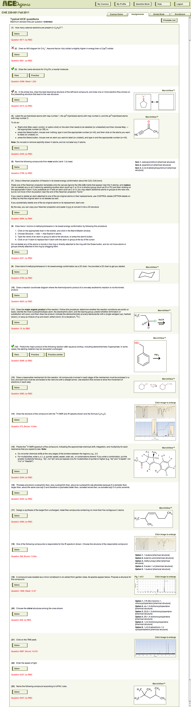

To do an assignment, simply click on the assignment's name on the assignment list page. The assignment's question list page will appear. We have chosen the questions in the assignment shown below to illustrate the many different types of questions that ACE can ask.
A student presses Solve to respond to a question. If a student has responded to a question, ACE places an icon next to the question number to indicate whether the last response was correct, partially correct, or incorrect, as illustrated for questions 2–4 and 12. If the student answers the question correctly, or if the assignment deadline expires, then ACE replaces the Solve button with View and Practice buttons, as illustrated for question 3. Certain ACE questions are R-group questions, in which a question structure contains an R group, and ACE substitutes this R group with a different randonly chosen group for each student; after a student answers such a question correctly, ACE will provide a Practice similar button, as in question 12. If the student presses this button, she will see a new version of the question with a different substitution for the R group.
Students can do questions in any order. (Exception: Questions that the instructor has denoted as "depending" on the student having already answered another question correctly.) Students can leave the assignment at any time, return later, and pick up right where they left off (assuming the deadline has not past).
